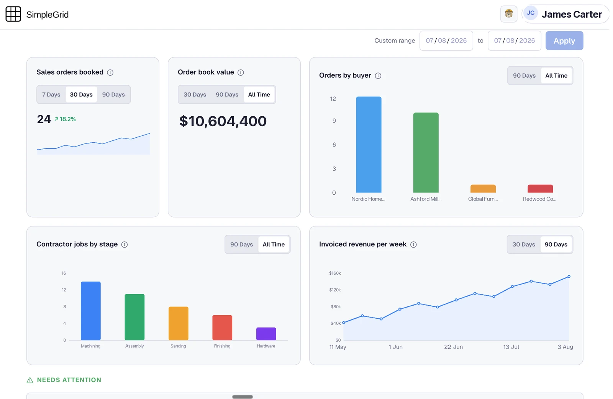

CIO / Systems
Stop being the integration layer.
Orders in Shopify, stock at the 3PL, costs in sheets, and you are the sync between them. SimpleGrid becomes the operational system of record, and maintaining it is our job, not yours.

You know this one
Every tool you added became something you maintain.
Every tool added another nightly export, and every export is yours to babysit.
The founder asks one number, margin by SKU this month, and it is half a day of joins.
Something broke overnight, and you found out from customer support tickets.
What changes
One system of record, maintained by us.
Nothing about your stack has to go. What changes is who carries it: the syncs, the connectors and the breakages stop being yours.
| Today | With SimpleGrid |
|---|---|
| You are the sync between five systems | One operational system of record |
| Every integration is yours to maintain | Connectors built and maintained by us |
| Answers require exports and joins | Ask Hank, get the number with its source |
| Every new tool adds surface area | One system, unlimited seats, your own isolated database |
Your screens
Three screens, and the joins are already done.
I was the integration layer. Now the connectors are somebody else’s job, and when something needs changing I make one call.
Live in 12 days. Connectors built as part of setup, at no cost.
The objection
“Is this one more thing I have to maintain?”
No. We build the connectors, we maintain them, and when something needs changing you call us, not a partner and not a ticket queue. AES-256 at rest, TLS 1.3 in transit, your own isolated database, SOC 2 Type II in progress. Your data exports in standard formats any day you want it.
Book a demo